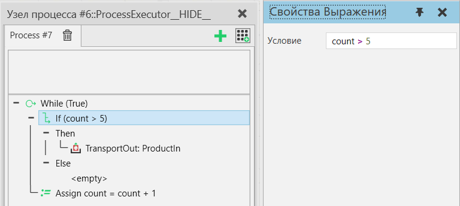

Если |
|
Оператор Если (If) позволяет выполнять область операторов Then или Else в зависимости от условия. Если условие истинно, процесс выполняет операторы в Then-области. Если условие ложно, процесс выполняет операторы в Else-области.  Свойства
|